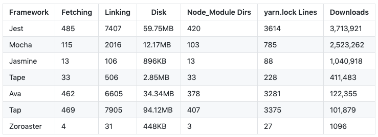

##! Creating Tests
Tests for the original packages were written for _Mocha_ testing framework, but we need to update them into _Zoroaster_ context-testing specs and masks. Let's take [the first test suite](https://github.com/leeoniya/dropcss/blob/2a883e5107c68c2181d4c0e02b30e15cf4e7736c/test/src/0-context-free-unary-sel.js) and have a look at its structure:
We can see that each time the logic is pretty much the same: we use the `` html as HTML string for first cases, but change it to `` for ID selector tests, then manipulate some CSS from test to test and expect the result to be equal to certain values. All tests are written within *describe* and *it* blocks for _Mocha_ which has been in use for testing both back-end and front-end applications for a long time. In contrast, _NodeTools_, being an entirely new stack for professional web development, includes a brand new testing framework called _Zoroaster_ that is really low-weight, yet contains more features out of the box than its main competitors and introduces new concepts in _Quality Assurance_ such as mask- and context-testing.

###! Mask Testing
Tests like the ones shown above are perfect candidates for mask testing — a new type of tests where using a template called test mask we generate many specs at runtime based on multiple input-to-output mappings that come from a separate file called mask result. If you've ever used a loop to call *describe* and *it* methods by hand, you'll be familiar with the concept of dynamic test suite construction. _Zoroaster_ provides an official standard way to do that, and coins the term _mask testing_ to name this process.
Each program or method is just a state machine that maps inputs to outputs on a problem space. While testing, we control inputs, and observe outputs, which are then asserted on for correctness of the algorithm. Therefore specs that we write, allow us to mask the problem space using inputs as variables.
Consider the example below (move mouse over the black screen to discover the problem space): one way to interpret the graph is as of a function that accepts 2 variables (*x1* and *x2*) and outputs *y* according to inputs (in real life though, these are just data points in a 3D space). To know this Y position, we need to execute the function and see what output it produces. Such machine learning models as a regression model allow to _approximate_ real-world functions using planes, but the point of this example is that a mask is a collection of specs, where each spec is a data point. The mask is that circle you see on a diagram, that envelops a number of crosses, i.e. exact data points (specs) that we collect by running tests. The more specs we generate, the fuller picture we get. Ideally, we want to test all possible inputs including edge cases, but practically we just want to meet our requirements.
A spec is a single data point on the algorithm's problem space, whereas a mask is a collection of such points. Mask testing allows to generalise spec creation process and provides a broader strategy for quality assurance.
Pure functions will always produce the same result, so we want to program mostly in functional style to avoid side effects in script scopes that make mapping non-deterministic. But no need to worry as it's probably what you've been doing with JS anyway. However with _Mocha_, it's become almost an anti-pattern to keep certain variables in the *describe* scope, which is error-prone. This is why all such scoped variables that can be used in tests are moved into a context in _Zoroaster_, and test cases become pure, but more on context-testing later.
So what are we controlling with these first _TrapCSS_ tests? Basically, it's HTML and CSS, and we assert on the output. This means we need 2 input properties, and one output. Masks by default look like the following:
```markdown
[Optional preamble to the whole mask]
## test name
input
/* expected */
output
/**/
## test name2
input
/* property */
optional additional prop with
some controlled value
/**/
/* expected */
output 2
/**/
```
This means we give spec names, can add any number of properties, and pass the expected output for comparison also. The testing framework will then execute the test logic that is written only once, and using string assertion (or deep equal for objects), compare the output to expected. In case of an error, it will be shown in the console and the framework will exit with the status code > 0.
In this case, we can construct the following mask. It's a bit complex for the first ever example of a mask, but bear with me, it's not that complicated.
To create a mask, we import the *makeTestSuite* method from ``@zoroaster/mask`` that comes together with _Zoroaster_. The first argument to this function is a path to the mask result file, or directory with multiple such files, that will be scanned recursively. The second argument is the actual config to the mask, and will include either methods like `getResults` (most general use case), `getReadable`, `getTransform` (if our library returned streams) or `fork` configuration (to test Node processes). All properties from the mask are available via the `this` keyword: *this.preamble*, *this.input*. We'll organise tests by files, so that a preamble in each file can be used as HTML input, whereas the body of each test will be the CSS string. When we don't write preamble, we'll split the test input by new line to derive HTML and CSS.
We want to extract HTML using the regex: `[,html] = /content: '(.+?)'/.exec(html)`, to be able to receive syntax highlighting in mask results, which will be saved as `.scss` files. After HTML and CSS strings are ready, we simply pass them to ``trapcss`` and return results. Our function is synchronous, but it would also be possible to test async methods by writing `async getResults(){}`. Using the mapping function `mapActual` we then return the css property of the whole result, so that it can be compared against the expected one from the mask result. If we wanted to assert on other properties from the result too using JavaScript, we could implement another method called `assertResults` but we're only interested in testing produced CSS here. This is how our mask results look like:
This is the default mask result for the very first test, without a preamble, but with HTML followed by new line and CSS in the test body. The reason to write html in CSS is to keep syntax highlighting in the whole file, for example if we only gave HTML as a string, we'd get red lines everywhere in the file, as shown below.
Each new tests starts with the comment `//` characters — a default unless a markdown file is used, in which case it'd be `##`. This can also be controlled via the `splitRe` setting of the mask config.
This is the mask result for test suite with the tag testing, where HTML is given at the top of the file (called preamble) to be accessed by each test. We can also duplicate this file and change the div tag to self-closing tag in a single place (preamble), to increase test coverage easily. Where the output of the test is expected to be a 0-length string, we just leave the expected property empty.
These are tests for the ID selector, where we used preamble as HTML input for all tests. We write such html as the `content` property of the CSS rule, so that the IDE will provide syntax highlighting for the best pleasant developer experience while testing. There are more tests for attribute selectors which you can [study in the repository](attributes) but they all follow the same logic so we skip talking about them here.
To run our tests, there are a number of *package.json* scripts that can be used: [spec|mask|test] depending on whether we want to run specs (see later section), masks or all. We'll just run after having constructed our first mask tests.
```bash
yarn run v1.13.0
$ yarn t test/mask
$ zoroaster -a test/mask
test/mask
bin
unary
Context-free, unary selector
�✓ *: should retain present
#id
�✓ should retain present
�✓ should drop absent
�✓ :not - should retain present
�✓ :not - should drop absent
.class
�✓ should retain present
�✓ should drop absent
�✓ :not - should retain present
�✓ :not - should drop absent
�✓ should retain present
�✓ should drop absent
�✓ :not - should retain present
�✓ :not - should drop absent
�✓ should retain present
�✓ should drop absent
�✓ :not - should retain present
�✓ :not - should drop absent
attr
�✓ [attr]: should retain present
�✓ [attr]: should drop absent
�✓ [attr=value]: should retain present
�✓ [attr=value]: should drop absent
�✓ [attr*=value]: should retain present
�✓ [attr*=value]: should drop absent
�✓ [attr^=value]: should retain present
�✓ [attr^=value]: should drop absent
�✓ [attr$=value]: should retain present
�✓ [attr$=value]: should drop absent
�✓ [attr~=value]: should retain present
�✓ [attr~=value]: should retain present (multiple first)
�✓ [attr~=value]: should retain present (multiple second)
�✓ [attr~=value]: should drop absent
�✓ [attr~=value]: should drop absent (reverse)
:not
�✓ [attr]: should retain present
�✓ [attr]: should drop absent
�✓ [attr=value]: should retain present
�✓ [attr=value]: should drop absent
�✓ [attr*=value]: should retain present
�✓ [attr*=value]: should drop absent
�✓ [attr^=value]: should retain present
�✓ [attr^=value]: should drop absent
�✓ [attr$=value]: should retain present
�✓ [attr$=value]: should drop absent
🦅 Executed 42 tests.
Done in 1.85s.
```